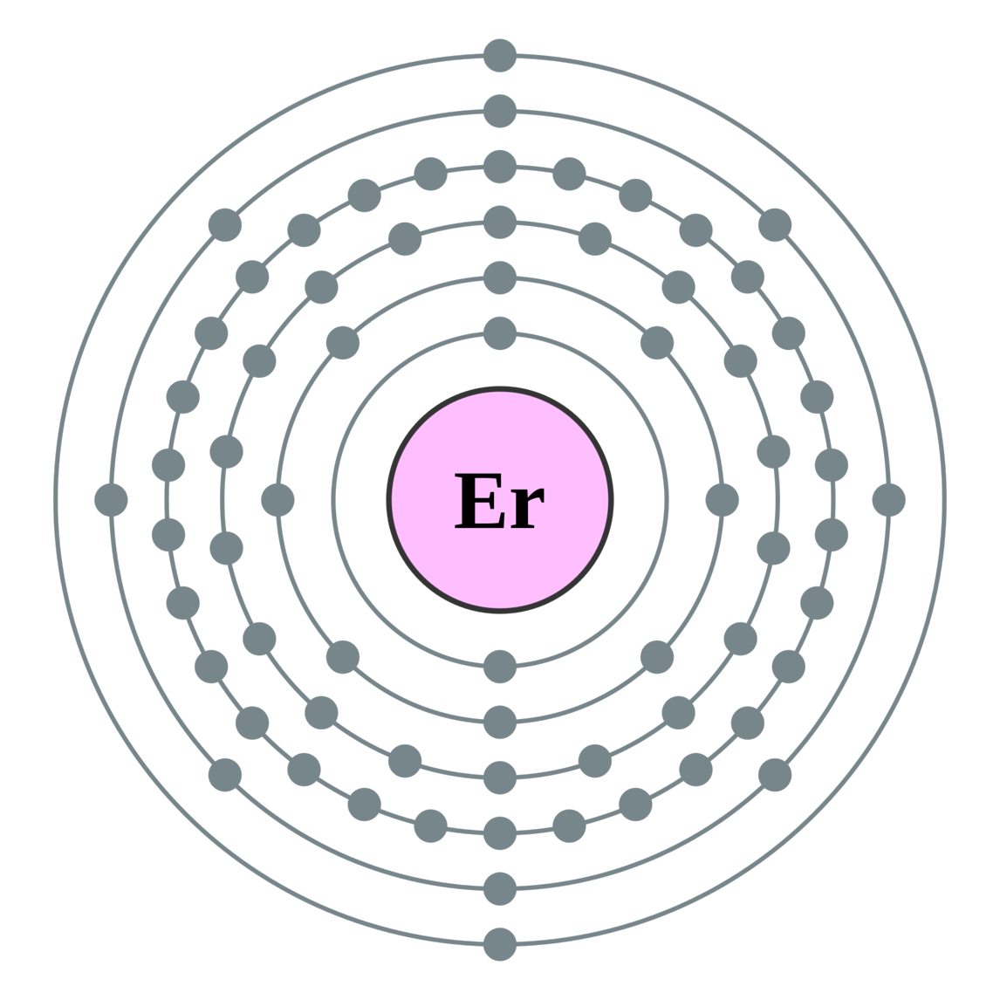

←
→
Erbium is a chemical element with symbol Er and atomic number 68. A silvery-white solid metal when artificially isolated, natural erbium is always found in chemical combination with other elements. It is a lanthanide, a rare earth element, originally found in the gadolinite mine in Ytterby in Sweden, from which it got its name.
Erbium's principal uses involve its pink-colored Er3+ ions, which have optical fluorescent properties particularly useful in certain laser applications. Erbium-doped glasses or crystals can be used as optical amplification media, where Er3+ ions are optically pumped at around 980 or 1480 nm and then radiate light at 1530 nm in stimulated emission. This process results in an unusually mechanically simple laser optical amplifier for signals transmitted by fiber optics. The 1550 nm wavelength is especially important for optical communications because standard single mode optical fibers have minimal loss at this particular wavelength.
Erbium's principal uses involve its pink-colored Er3+ ions, which have optical fluorescent properties particularly useful in certain laser applications. Erbium-doped glasses or crystals can be used as optical amplification media, where Er3+ ions are optically pumped at around 980 or 1480 nm and then radiate light at 1530 nm in stimulated emission. This process results in an unusually mechanically simple laser optical amplifier for signals transmitted by fiber optics. The 1550 nm wavelength is especially important for optical communications because standard single mode optical fibers have minimal loss at this particular wavelength.